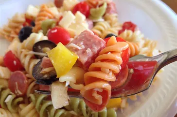

Awesome Pasta Salad

This pasta salad with pepperoni, tomatoes, and provolone cheese is the best I've ever eaten, and people request it frequently. It's a very easy, light-tasting side dish for a picnic or dinner.
Ingredients
- 1 pack fusilli pasta
- 3 cups cherry tomatoes, halved
- Half pound provolone cheese, cubed
- Half pound salami, cubed
- Half pound sliced pepperoni, cut in half
- 1 green bell pepper, cut into 1 inch pieces
- 1 can black olives
- 1 jar pimentos, drained
- 1 bottle italian salad dressing
Directions
- Gather all ingredients
- Bring a large pot of lightly salted water to a boil. Cook fusilli pasta in the boiling water, stirring occasionally, until tender yet firm to the bite, about 12 minutes.
- Combine pasta with tomatoes, cheese, salami, pepperoni green pepper, olives and pimentos in a large bowl.
- Enjoy